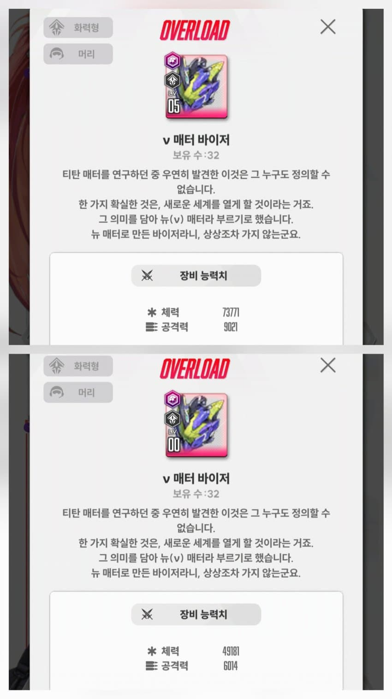
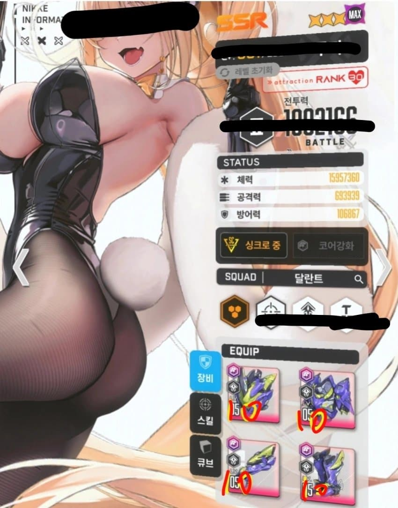
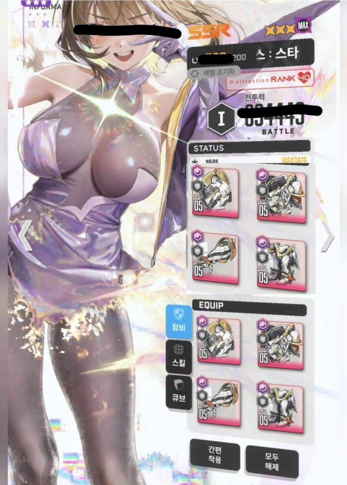

개요
1. 할배들은 맨날 콘솔렙 콘슬렙 노래를 부르지만 정작 그게 정확히 얼마나 큰 차이인지는 아무도 설명해주지 않는다
2. 그게 치매 때문인지 아니면 경쟁자 제거를 위한건지는 모르겠지만 아무튼 콘솔렙에 관해 깊게 다룬 정보글은 공지에 있는 검색기로 돌려도 찾기 힘들다
3. 할배들 꿀통 내놔잇

먼저 장비중에서 가장 우선시되는 화력형 머리 장비를 예시로 들면, 깡오버 장비와 풀강의 공격력 차이는 3007이다.
기업 콘슬 1레벨이 공격력을 25씩 올려주는 것을 생각하면, 머리부위 0강과 풀강의 공격력 차이는 콘솔렙 120렙 만큼의 차이와 대등하다고 볼 수 있는 셈이다.

여기까지만 보면 콘솔이 생각보다 별 것 아닌것 같지만, 장갑과 갑옷의 경우 공격력 수치가 훨씬 낮기에 0강과 풀강의 공격력 차이가 각각 콘슬 76렙, 22렙 정도의 차이 뿐이고
그 결과 콘솔렙 218렙이 차이나는 할배는 뉴비에 비해 화력형 니케의 모든 장비를 10강까지 준 공격력을 가진것과 같다는 결론을 얻을 수 있다.

게다가 이 차이는 지원형, 방어형 니케에서 더욱 두드러지는데 이들 장비의 공격력 수치는 공격형에 비해 각각 0.83, 0.66배 가량이므로 콘솔렙 180, 144렙 차이만으로 10강 장비 세트와 같은 효과를 보게된다
더 자세히 알아보고 싶지만 슬슬 정신이 혼미해지기 시작했으니 콘솔 레벨의 영향이 큰 방어형 니케 아니스로 마지막 예시를 들어보면
싱크로 레벨이 1000에 근접한 상할대로 상한 할배들은 터무니 없는 콘솔렙을 가지고 있는 경우가 있는데, 만약 그로 인해 콘솔 레벨이 뉴비보다 432레벨만큼 높게 된다면 이는 방어형 니케 기준으로 풀강 장비를 한세트 더 장착한 공격력과 같게 된다.

여기까지 읽었다면 할배들이 숨기고 있던 꿀통이 사실 모래지옥이었다는 사실을 깨달았을테니 앞으로는 협전 때 공손한 마음가짐으로 버스를 타는 습관을 들이도록 하자
끝